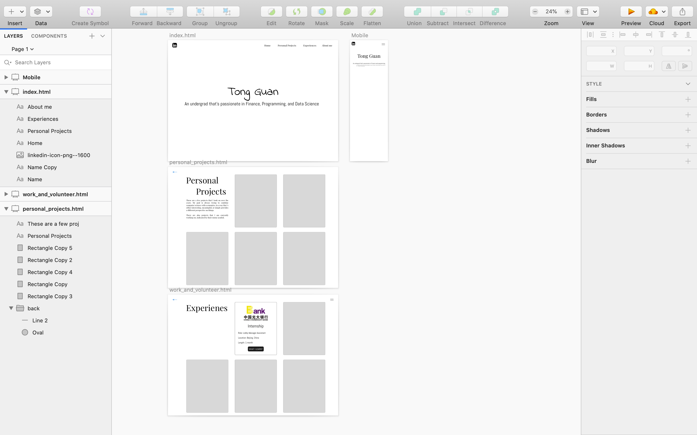

Consider this as my learning project for HTML, CSS, and Javascript. Since I have just picked up the languages right before I started this project. There was a previous version of this website, however, the website structure was a little bit messy so I deleted all the files and redesigned the entire structure and a little change of design for the cards. Unfortunately I did not separate the very first version of the website stage 0 of the website, as I didn't really anticipate anyone would be interested in that. But, if you'd like to see them, the files for that version should be before commit 9 of the project.
For the initial design process, I used Sketch, a UI/UX design application on mac. As this is my first real world project, besides a few learning projects learning the languages, I only drew out a very simple design using Sketch. So some of the design you see here are probably not reflected on the Sketch design.
Currently I have finished structuring the website, did some basic CSS styling, and put in almost all the contents. This project will probably be put aside for awhile until my summer session finishes. Below are the stages for this project that I planned.